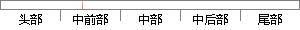

订单分为交易中、交易完成两个状态。
片段位置图

相似结果|
相似片段 1：根据交易订单的状态将我发布的交易分为三类，分别为未开始、进行中和已完成的交易。点击未开始按钮，请求显示所有未被购买的交易商品，当点击任意交易的 item时，进入交易商品详细信息界面。点击进行中按钮
相似片段 2：)交易时间前15分钟提醒(9)交易时间过期状态，开车15分钟前停止交易．订单信息功能：分为全部订单、交易中、待评价三种，其中全部订单为旅客与小红帽所有的己完成和正在交易中的订单。旅客方的交易中的订单
相似片段 3：状态的切换，买卖双方在不同的状态，有不同的行为，或者说不同的状态有相应的行为。另外，订单当前的状态转换为下一步可操作的状态是取决于用户是买家还卖家，但是订单状态转换直到完成交易又是通过双方共同完成，所以
相似片段 4：成交量，并将整个交易时期划分为多个交易时间段，根据每个时间段内市场交易量占总交易量的比值确定此时段内应该提交的订单规模。因此，VWAP 交易策略的制定一般也可以分为两个步骤：将交易日划分为多个时间段
相似片段 5：配送收货卖家买家加入购物车调整订单价格付款挑选商品下单，生成订通知物流取货发货确认收货交易完成待付款待发货已发货5-6 付款流程图5.2.3技术实现5.2.3.1 总体概述整个系统分为四个层：（1）数据
相似片段 6：企业视角来看，成果交易订单管理在提供良好的浏览体验外，还需提供完善的购买方式以及订单管理模块，使用户能够清晰明了的跟踪和处理订单状态。与成果团队角度不同，成果团队对成果交易信息从发布到完成每一个状态
相似片段 7：Agent处于状态Accessible，则当其接收到交易者Agent发送的订单时，会按照交易机制规定的原则进行排序，再进行存人订单簿或即时成交等操作。操作完成之后又转回状态Accessible。最右侧
|
※ 片段修改建议 ※
近似词参考：- 订单：定单
- 交易：买卖 生意业务
- 交易：买卖 生意业务
- 状态：状况
系统自动生成语句：定单分为买卖中、买卖完成两个状况。
注：本片段修改建议为系统自动生成，仅供参考。